1004B12 power unit with manual gearbox - r+r for versions with a/c
- Path
- Procedures > 10 ENGINE > 1004 ENGINE AND POWER UNIT > 1004B power unit assembly > 1004B12 power unit with manual gearbox - r+r for versions with a/c
- Kind
- repair procedure (removal / refitting; the operation number is the code)
- Applies to
- engines: 1.6 TS , 1.8 TS, 2.5 V6, 3.2 V6, 1.9 JTD 8v , 2.4 JTD 10v; all production periods
- Interactive page
- https://sloeber94.github.io/elrnDB-a156/en/#/3237437
Applies to: engines: 2.5 V6, 3.2 V6; all production periods
 Removing
Removing
 Refitting
RefittingPosition the vehicle on the ramp.
Disconnect the battery negative (-) terminal.
 | Name | Connector |
|---|---|---|
- | Battery |
4450B12 front or rear wheels (two) - r+r
7055B64 Engine compartment DUST shield in front wheel arch (one), left or right - R.R.
7055B54 under-engine guard - r r
Drain the coolant.
5040A10 Air conditioning refrigerant CIRCUIT - Draining and Refilling
1088D10 lower sleeve for coolant outlet from radiator - r + r
1088D14 upper sleeve for coolant inlet to radiator - r + r
1088B24 engine cooling radiator - r r for air conditioned versions
Drain the power steering fluid from the reservoir using a suitable syringe.
1. Working from the passenger compartment, undo the bolts (1a) and remove the injection-ignition guard (1b).
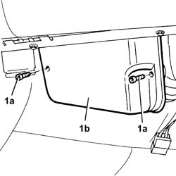
Applies to: engines: 2.5 V6, 3.2 V6; all production periods
1. Disconnect the electrical connections from the injection-ignition electronic control unit.
| Name | Connector |
|---|---|---|
1 | Engine management ECU |
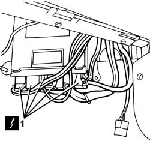
Applies to: engines: 2.5 V6, 3.2 V6; all production periods
1. Disconnect the electrical connection from the fuel vapour cut-out solenoid valve from the filter.
| Name | Connector |
|---|---|---|
1 | Fuel vapour recovery solenoid |
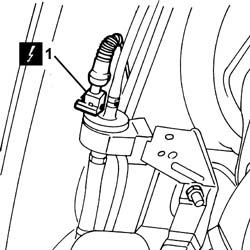
Applies to: engines: 2.5 V6, 3.2 V6; all production periods
1. Undo bolts (1a) and remove the right windscreen base trim (1b) after disconnecting from the washer spray pipe.
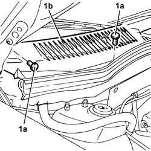
Applies to: engines: 2.5 V6, 3.2 V6; all production periods
1. Undo the bolts (1a) for the wiring (1b) to the engine compartment bulkhead, then remove it and fix it temporarily to the engine.
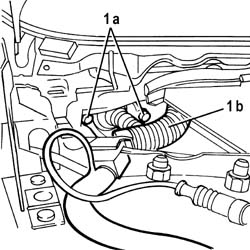
Applies to: engines: 2.5 V6, 3.2 V6; all production periods
1048A34 sleeve(s) from flow meter to air supply capacity case - r + r
5530B52 Battery DRIP TRAY/SUPPORT - R.R.
1. Disconnect the electrical connection from the air flow meter.
| Name | Connector |
|---|---|---|
1 | Air flow meter |
2. Undo the bolts (2a) and remove the air filter cover (2b) complete with air flow meter (2c).
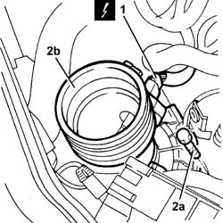
Applies to: engines: 2.5 V6, 3.2 V6; all production periods
1008C10 power unit upper reaction link r r
1. Undo the nuts (1a) and disconnect the positive battery terminal (1b) from the leads (1c).
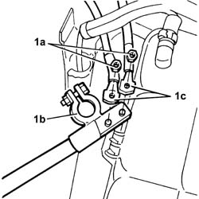
Applies to: engines: 2.5 V6, 3.2 V6; all production periods
1. Disconnect the coolant return pipe from the engine coolant tank.
2. Disconnect the supply system pipe from the engine coolant reservoir.
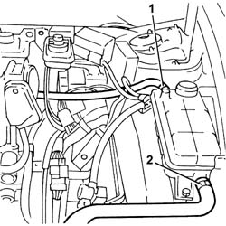
Applies to: engines: 2.5 V6, 3.2 V6; all production periods
1. Disconnect the fuel/oil vapour recirculation pipe from the air chamber.
2. Disconnect the vacuum intake pipe from the air chamber.
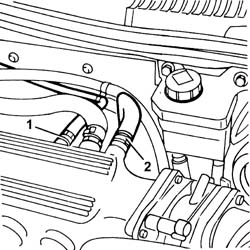
Applies to: engines: 2.5 V6, 3.2 V6; all production periods
1. Disconnect the electrical connections (1a) and (1b) for the enging wiring.
| Name | Connector |
|---|---|---|
1a | Front/engine connection |
| Name | Connector |
|---|---|---|
1b | Front/engine connection |
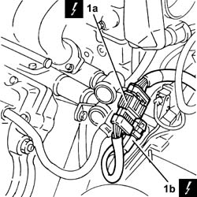
Applies to: engines: 2.5 V6, 3.2 V6; all production periods
1. Disconnect the coolant supply and return pipes to the climate control system heater.
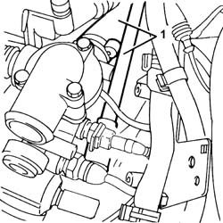
Applies to: engines: 2.5 V6, 3.2 V6; all production periods
1. Disconnect the gear selector and engagement cables from the gearbox.
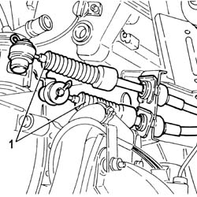
Applies to: engines: 2.5 V6, 3.2 V6; all production periods
1. Disconnect the coolant inlet and outlet pipes from the compressor.
2. Disconnect the fluid inlet and outlet pipes from the power assisted steering pump.
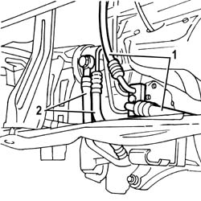
Applies to: engines: 2.5 V6, 3.2 V6; all production periods
1. Undo the bolts (1a) and move the clutch operating cylinder (1b), complete with bracket (1c), aside without disconnecting the pipe (1d).
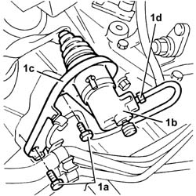
Applies to: engines: 2.5 V6, 3.2 V6; all production periods
1. Disconnect the electrical connection from the reversing lights switch.
| Name | Connector |
|---|---|---|
1 | Reversing lights switch |
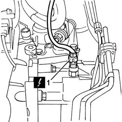
Applies to: engines: 2.5 V6, 3.2 V6; all production periods
1. Undo the bolt (1a) and move the drier filter/accumulator (1b).
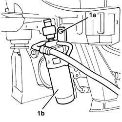
Applies to: engines: 2.5 V6, 3.2 V6; all production periods
1. Release the power assisted steering heat exchanger pipe from the bands on the radiator lower crossmember.
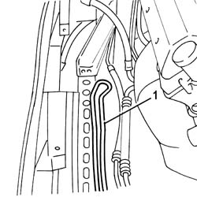
Applies to: engines: 2.5 V6, 3.2 V6; all production periods
1076B52 exhaust pipe (one) leaving l/h or r/h exhaust manifold - r + r
1. Disconnect the power assisted steering pump fluid supply and return pipes (1a) from the fixings (1b) on the crankcase sump and the engine support.
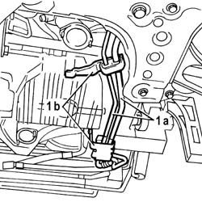
Applies to: engines: 2.5 V6, 3.2 V6; all production periods
1. Undo the bolts (1a) and disconnect the right driveshaft (1b) from the intermediate shaft.
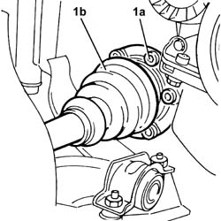
Applies to: engines: 2.5 V6, 3.2 V6; all production periods
1. Undo the bolts (1a) and disconnect the left driveshaft (1b) from the differential inner shaft.
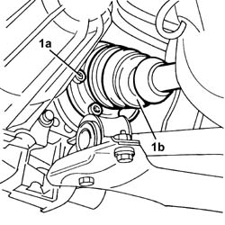
Applies to: engines: 2.5 V6, 3.2 V6; all production periods
1008A44 rear rigid mount - r r
1. Fit the tools (1a), (1b), (1c), (1d) for removing the power unit on the hydraulic jack and fix it to the power unit.
 | Name | Country |
|---|---|---|
1a | Mount | 1.870.644.000 |
| Name | Country |
|---|---|---|
1b | Mount | 1.870.644.001 |
| Name | Country |
|---|---|---|
1c | Adaptor | 1.860.910.001 |
| Name | Country |
|---|---|---|
1d | Crossmember | 1.820.225.000 |
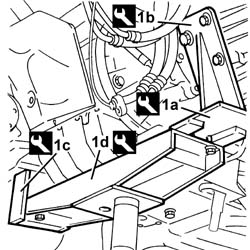
Applies to: engines: 2.5 V6, 3.2 V6; all production periods
1008A42 gear box left rigid mount - r r
1008A46 cam shaft left rigid mount - r r
Lower the hydraulic jack slowly and remove the power unit from the engine compartment.
Secure and support the power unit using a hydraulic hoist, then release it from the tools used for the removal.
Applies to: engines: 2.5 V6, 3.2 V6; all production periods
Refitting
RemovingUsing a hydraulic hoist, position and fix the power unit to the tools to be used for the refitting.
Place the power unit back in the engine compartment using the hydraulic jack.
1008A46 cam shaft left rigid mount - r r
1008A42 gear box left rigid mount - r r
Remove the tools used for the refitting from the power unit and return them to their place.
1008A44 rear rigid mount - r r
1. Connect the left driveshaft (1a) to the differential inner shaft and fix it tightening the new bolts (1b) to the recommended torque.
 | Fastening | Component | Ø | Value (daNm) |
|---|---|---|---|---|
1b | Bolt | FRONT DRIVE SHAFT COMPLETE WITH JOINTS | M10 | 5.0 ÷ 6.1 |
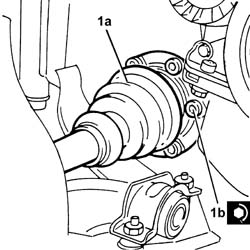
Applies to: engines: 2.5 V6, 3.2 V6; all production periods
1. Connect the right driveshaft (1a) to the intermediate shaft and fix it tightening the new bolts (1b) to the recommended torque.
| Fastening | Component | Ø | Value (daNm) |
|---|---|---|---|---|
1b | Bolt | FRONT DRIVE SHAFT COMPLETE WITH JOINTS | M10 | 5.0 ÷ 6.1 |
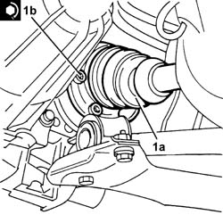
Applies to: engines: 2.5 V6, 3.2 V6; all production periods
Fix the power assisted steering pump fluid supply and return pipes to the fixings on the crankcase sump and the engine support.
1076B52 exhaust pipe (one) leaving l/h or r/h exhaust manifold - r + r
Fix the power assisted steering heat exchanger pipe using the bands to the radiator lower crossmember.
Place the drier filter/accumulator in its housing and fix it to the bodyshell using the bolt.
Connect the electrical connection to the reversing lights switch.
1. Place the clutch operating cylinder (1a), complete with mounting bracket (1b), back in its housing and fix it tightening the bolts (1c) to the recommended torque.
| Fastening | Component | Ø | Value (daNm) |
|---|---|---|---|---|
1c | Bolt | CLUTCH SLAVE CYLINDER | M8 | 1.4 |
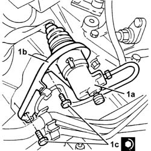
Applies to: engines: 2.5 V6, 3.2 V6; all production periods
Connect the fluid inlet and outlet pipes to the power assisted steering pump.
Connect the coolant inlet and outlet pipes to the compressor.
Connect the gear selector and engagement cables to the gearbox as described in op. 2110C50 gear selection and engagement unit - r r .
Conect the coolant supply and return pipes to the climate control system heater.
Connect the engine wiring electrical connections.
Connect the brake servo vacuum intake pipe to the air chamber.
Connect the fuel vapour recirculation pipe to the air chamber.
Connect the supply system pipe to the engine coolant reservoir.
Connect the coolant return pipe to the engine coolant tank.
Connect the leads to the positive battery terminal and fix them using the nuts.
1008C10 power unit upper reaction link r r
Fit the air filter cover complete with air flow meter and fix it using the bolts.
Connect the electrical connection to the air flow meter.
5530B52 Battery DRIP TRAY/SUPPORT - R.R.
1048A34 sleeve(s) from flow meter to air supply capacity case - r + r
Place the engine wiring back in its housing and pass it through the special opening in the engine compartment bulkhead, then fix it using the bolts.
Connect the windscreen base trim to the windscreen washer spray pipe, then fit and secure using the bolts.
Connect the electrical connection to the fuel vapour cut-out solenoid valve.
Connect the electrical connections to the injection-ignition control unit.
Fit the injection-ignition control unit protection and bolt in place.
1088B24 engine cooling radiator - r r for air conditioned versions
1088D14 upper sleeve for coolant inlet to radiator - r + r
1088D10 lower sleeve for coolant outlet from radiator - r + r
5040A10 Air conditioning refrigerant CIRCUIT - Draining and Refilling
7055B54 under-engine guard - r r
7055B64 Engine compartment DUST shield in front wheel arch (one), left or right - R.R.
4450B12 front or rear wheels (two) - r+r
Connect the battery terminal (-).
Fill the power steering circuit with the recommended fluid.
 | Type | Component | Name | Qty. |
|---|---|---|---|---|
- | Fluid | POWER ASSISTED STEERING CIRCUIT | TUTELA GI/A | - |
Bleed the power steerign system as described below.
With the front wheels raised off the ground, with the engine switched off, carry out 4-5 complete steering wheel rotation cycles (left and right).
Check and, if necessary, top up the fluid level in the reservoir.
Position the vehicle on the ground and start up the engine.
Carry out 4 - 5 complete steering wheel rotations (right and left).
Top up the fluid level in the reservoir.
Applies to: engines: 1.6 TS , 1.8 TS; all production periods
Removing
RefittingPosition the vehicle on the ramp.
Disconnect the battery negative (-) terminal.
| Name | Connector |
|---|---|---|
- | Battery |
4450B12 front or rear wheels (two) - r+r
7055B64 Engine compartment DUST shield in front wheel arch (one), left or right - R.R.
7055B54 under-engine guard - r r
1088D10 lower sleeve for coolant outlet from radiator - r + r
Applies to: engines: 1.6 TS ; all production periods
1. Disconnect the fuel inlet and outlet pipes from the distribution manifold.
2. Disconnect the fuel vapour recirculation pipe from the inlet chamber.
3. Disconnect the electrical connection for the rpm and timing sensor.
| Name | Connector |
|---|---|---|
3 | Rpm sensor |
4. Disconnect the electrical connection for the detonation sensor.
| Name | Connector |
|---|---|---|
4 | Detonation sensor - 1 |
5. Disconnect the electrical connection for the cam angle sensor.
| Name | Connector |
|---|---|---|
5 | Timing sensor |
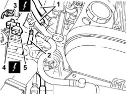
Applies to: all engines; all production periods
1. Disconnect the fuel supply pipe from the fuel distributor manifold.
2. Disconnect the fuel vapour recirculation pipe coupling.
3. Disconnect the electrical connection for the cam angle sensor.
| Name | Connector |
|---|---|---|
3 | Timing sensor |
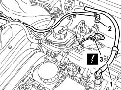
Applies to: engines: 1.6 TS , 1.8 TS; all production periods
1. Disconnect the coolant return pipe from the coolant reservoir from the thermostat.
2. Disconnect the fuel system pipe from the water pump rigid inlet pipe.
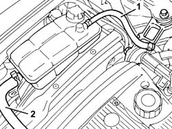
Applies to: engines: 1.6 TS , 1.8 TS; all production periods
Applies to: engines: 1.6 TS ; all production periods
1. Undo the bolt and disconnect the oil vapour recirculation duct from the tappet cover.
2. Disconnect the corrugated hose from the butterfly casing.
3. Disconnect the accelerator cable from the throttle body
4. Disconnect the electrical connection from the intake air temperature sensor.
| Name | Connector |
|---|---|---|
4 | Air temperature sensor |
5. Disconnect the electrical connection from the air flow meter.
| Name | Connector |
|---|---|---|
5 | Air flow meter |
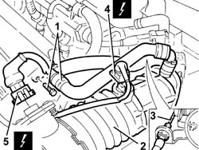
Applies to: all engines; all production periods
Applies to: all engines; all production periods
1. Disconnect the oil vapour recirculation pipe from the tappet cover.
2. Disconnect the accelerator cable from the throttle body
3. Disconnect the corrugated hose from the butterfly casing.
4. Disconnect the electrical connection from the air flow meter.
| Name | Connector |
|---|---|---|
4 | Air flow meter |
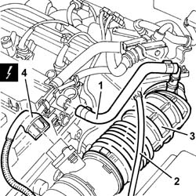
Applies to: engines: 1.6 TS , 1.8 TS; all production periods
1. Disconnect the electrical connection from the injection/ignition control unit.
| Name | Connector |
|---|---|---|
1 | Engine management ECU |
2. Disconnect the electrical connection for the dashboard wiring from the injection/ignition single/separable wiring.
| Name | Connector |
|---|---|---|
2 | Front/engine connection |
3. Disconnect the electrical connection for the Lambda sensor.
| Name | Connector |
|---|---|---|
3 | Lambda sensor |
4. Disconnect the electrical connection for the detonation sensor.
| Name | Connector |
|---|---|---|
4 | Detonation sensor - 1 |
5. Disconnect the electrical connection for the rpm and timing sensor.
| Name | Connector |
|---|---|---|
5 | Rpm sensor |
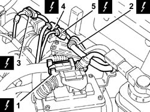
Applies to: engines: 1.6 TS , 1.8 TS; all production periods
Drain the brake-clutch fluid from the reservoir using a suitable syringe.
1. Lift up the retaining spring (1a) and disconnect the coupling (1b) for the hydraulic clutch actuator connecting pipe.
2. Disconnect the battery earth lead.
| Name | Connector |
|---|---|---|
2 | Battery earth |
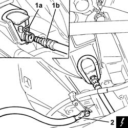
Applies to: engines: 1.6 TS ; all production periods
1. Disconnect the electrical connection from the combined sender unit for the engine coolant temperature gauge and warning light.
| Name | Connector |
|---|---|---|
1 | Coolant temperature sender unit |
2. Disconnect the electrical connection from the engine coolant temperature sensor.
| Name | Connector |
|---|---|---|
2 | Engine temperature sensor |
3. Disconnect the coolant supply pipe to the radiator from the thermostat.
4. Disconnect the supply pipes (4a) and return pipes (4b) to the climate control system heater from the thermostat and release them from the fixings.
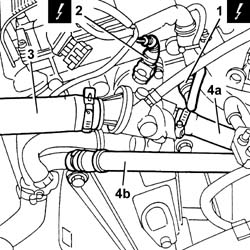
Applies to: all engines; all production periods
1. Disconnect the coolant supply pipe to the radiator from the thermostat.
2. Disconnect the supply pipes (2a) and return pipes (2b) to the climate control system heater from the thermostat and release them from the fixings.
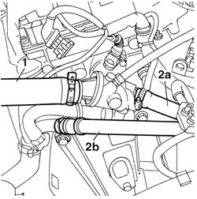
Applies to: engines: 1.6 TS , 1.8 TS; all production periods
1. Disconnect the vacuum pipe from the brake servo.
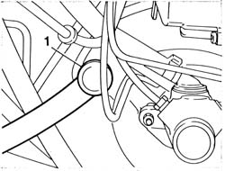
Applies to: engines: 1.6 TS , 1.8 TS; all production periods
Drain the power steering fluid from the reservoir using a suitable syringe.
Disconnect the power steering fluid reservoir return pipe.
Undo the connector and disconnect the supply pipe for the power assisted steering box from the power assisted steering pump.
1088E10 radiator cooling fan - r + r
5040A10 Air conditioning refrigerant CIRCUIT - Draining and Refilling
1. Undo the bolts and disconnect the coolant inlet and outlet pipes from the air conditioning compressor, then move them aside.
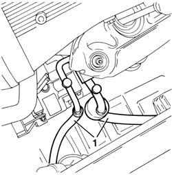
Applies to: engines: 1.6 TS , 1.8 TS; all production periods
1. Disconnect the gear control and engagement cables from the support and rod idler.
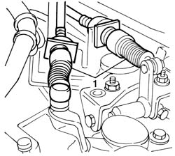
Applies to: engines: 1.6 TS , 1.8 TS; all production periods
Disconnect the electrical connections from the starter motor.
| Name | Connector |
|---|---|---|
- | Starter' motor |
1076B50 exhaust pipe attachment to engine - r + r
1. Undo the bolts for the driveshaft constant velocity joint flanges.
2. Remove the safety plates.
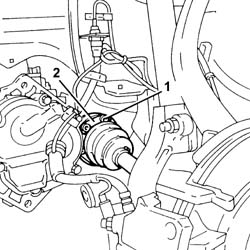
Applies to: engines: 1.6 TS , 1.8 TS; all production periods
1. Undo the nut (1a) and disconnect the steering knuckles (1b) from the upper track control arms using the tool (1c).
| Name | Country |
|---|---|---|
1c | Extractor | 1.821.169.000 |
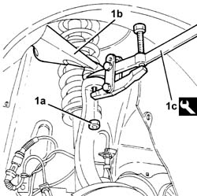
Applies to: engines: 1.6 TS , 1.8 TS; all production periods
Disconnect the front brake caliper flexible pipes and the A.B.S. active sensor cables from the mounting brackets.
Move the left driveshaft as far away as possible from the differential and the right one away from the intermediate shaft.
1. Position tools (1a) and (1b) on a hydraulic jack.
| Name | Country |
|---|---|---|
1a | Crossmember | 1.820.225.000 |
| Name | Country |
|---|---|---|
1b | Supports | 1.820.623.000 |
Position the tool assembled in this way under the power unit and fix it appropriately.
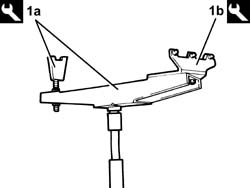
Applies to: engines: 1.6 TS , 1.8 TS; all production periods
1. Undo the bolt fixing the power unit rigid rear support to the flexible mounting.
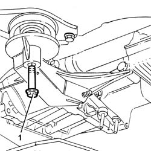
Applies to: engines: 1.6 TS , 1.8 TS; all production periods
1008A42 gear box left rigid mount - r r
1. Undo the bolt fixing the timing side engine support to the flexible mounting.
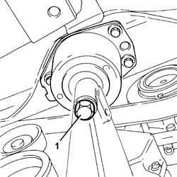
Applies to: engines: 1.6 TS , 1.8 TS; all production periods
Move the power unit towards the front of the vehicle and lower it using the hydraulic jack.
Secure and support the power unit using a hydraulic hoist, then release it from the tools used for the removal.
Applies to: engines: 1.6 TS , 1.8 TS; all production periods
Refitting
RemovingUsing a hydraulic hoist, position and fix the power unit to a hydraulic jack, complete with tools for refitting.
| Name | Country |
|---|---|---|
- | Crossmember | 1.820.225.000 |
| Name | Country |
|---|---|---|
- | Supports | 1.820.623.000 |
Place the power unit back in the engine compartment using the hydraulic jack.
1. Tighten the bolt fixing the timing side engine support to the flexible mounting to the recommended torque.
| Fastening | Component | Ø | Value (daNm) |
|---|---|---|---|---|
1 | Bolt | ENGINE MOUNT TIMING SIDE | M12 | 7.5 - 9.2 |
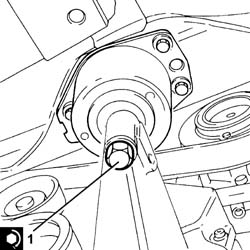
Applies to: engines: 1.6 TS , 1.8 TS; all production periods
1008A42 gear box left rigid mount - r r
1. Tighten the bolt fixing the power unit rigid rear support to the flexible mounting to the recommended torque.
| Fastening | Component | Ø | Value (daNm) |
|---|---|---|---|---|
1 | Bolt | POWER UNIT RIGID REAR MOUNT | M12 | 7.5 - 9.2 |
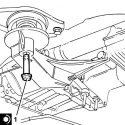
Applies to: engines: 1.6 TS , 1.8 TS; all production periods
Remove the tools used for the refitting from the power unit and return them to their place.
Place the driveshafts back in their housings.
Connect the front brake caliper flexible pipes and the A.B.S. active sensor cables to the mounting brackets.
Connect the steering knuckles to the upper track control arms and fix them tightening the nut to the recommended torque.
| Fastening | Component | Ø | Value (daNm) |
|---|---|---|---|---|
- | Nut | FRONT HUB STEERING KNUCKLE. | M10 | 4.3 - 4.7 |
Applies to: engines: 1.6 TS , 1.8 TS; all production periods
1. Position the safety plates (1a) and tighten the new bolts (1b) for the driveshaft constant velocity joint flanges to the recommended torque.
| Fastening | Component | Ø | Value (daNm) |
|---|---|---|---|---|
1b | Bolt | DRIVESHAFT CONSTANT VELOCITY JOINTS | M8 | 3.6 ÷ 4.4 |
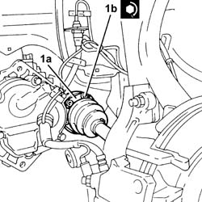
Applies to: engines: 1.6 TS , 1.8 TS; all production periods
1076B50 exhaust pipe attachment to engine - r + r
Connect the electrical connections to the starter motor.
Connect the gear control and engagement cables to the support and rod idler.
Place the coolant inlet and outlet pipes back in their housings and connect them to the compressor tightening the appropriate bolts.
1088E10 radiator cooling fan - r + r
Conect the power assisted steering box supply pipe connector to the power assisted steering pump and tighten it to torque.
| Fastening | Component | Ø | Value (daNm) |
|---|---|---|---|---|
- | Connector | PIPE BTWN PUMP + POWER STEERING BOX | M16 | 3.8 - 4.2 |
Connect the vacuum pipe to the brake servo.
Connect the climate control system heater supply and return pipes to the thermostat.
Connect the coolant supply pipe to the radiator to the thermostat.
Applies to: engines: 1.6 TS ; all production periods
Connect the electrical connection to the engine coolant temperature sensor.
Connect the electrical connection to the combined sender unit for the coolant temperature gauge and overheating warning light.
Applies to: engines: 1.6 TS , 1.8 TS; all production periods
Connect the battery earth lead to the gearbox.
Connect the connecting pipe coupling to the clutch hydraulic actuator.
Applies to: engines: 1.6 TS ; all production periods
Place the corrugated hose, complete with air flow meter and intake air temperature sensor, back in its housing, then connect it to the air filter and to the butterfly casing.
Connect the electrical connection to the air flow meter.
Connect the electrical connection to the intake air temperature sensor.
Connect the accelerator cable to the butterfly casing.
Connect the oil vapour recirculation duct to the tappet cover and fix it using the bolt.
Applies to: all engines; all production periods
Connect the electrical connection for the rpm and timing sensor.
Connect the electrical connection for the detonation sensor.
Connect the electrical connection for the Lambda sensor.
Connect the electrical connection for the dashboard wiring to the injection/ignition single/separable wiring.
Connect the electrical connection to the injection/ignition control unit.
Place the corrugated hose, complete with air flow meter, back in its housing and connect it to the air filter and the butterfly casing.
Connect the electrical connection to the air flow meter.
Connect the accelerator cable to the throttle body integral with the M.D.S. and adjust it (refer to op. 1068A30 accelerator control cable - r + r ).
Connect the oil vapour recirculation pipe to the tappet cover.
Applies to: engines: 1.6 TS , 1.8 TS; all production periods
1016A40 ignition coil cover on cylinder head- r+r
5530B52 Battery DRIP TRAY/SUPPORT - R.R.
1008C10 power unit upper reaction link r r
Connect the fuel system pipe to the water pump rigid inlet pipe.
Connect the coolant return pipe from the thermostat to the coolant reservoir.
Applies to: engines: 1.6 TS ; all production periods
Connect the electrical connection for the cam angle sensor.
Connect the electrical connection for the detonation sensor.
Connect the electrical connection for the rpm and timing sensor.
Connect the fuel vapour recirculation pipe to the inlet chamber.
Connect the fuel inlet and outlet pipe from the fuel distributor manifold.
Applies to: all engines; all production periods
Connect the electrical connection for the cam angle sensor.
Connect the coupling for the fuel vapour recirculation pipe.
Connect the fuel supply pipe to the fuel distribution manifold.
Applies to: engines: 1.6 TS , 1.8 TS; all production periods
1088D10 lower sleeve for coolant outlet from radiator - r + r
7055B54 under-engine guard - r r
7055B64 Engine compartment DUST shield in front wheel arch (one), left or right - R.R.
4450B12 front or rear wheels (two) - r+r
1820B08 Clutch release HYDRAULIC SYSTEM - Bleeding air and restoring level
5040A10 Air conditioning refrigerant CIRCUIT - Draining and Refilling
Connect the battery terminal (-).
Fill the power steering circuit with the recommended fluid.
| Type | Component | Name | Qty. |
|---|---|---|---|---|
- | Fluid | POWER ASSISTED STEERING CIRCUIT | TUTELA GI/A | - |
Bleed the power steerign system as described below.
With the front wheels raised off the ground, with the engine switched off, carry out 4-5 complete steering wheel rotation cycles (left and right).
Check and, if necessary, top up the fluid level in the reservoir.
Position the vehicle on the ground and start up the engine.
Carry out 4 - 5 complete steering wheel rotations (right and left).
Top up the fluid level in the reservoir.
Applies to: engines: 1.9 JTD 8v ; all production periods
Removing
RefittingPosition the vehicle on the ramp.
5530B52 Battery DRIP TRAY/SUPPORT - R.R.
4450B12 front or rear wheels (two) - r+r
7055B42 Additional FRONT WHEEL ARCH (one), left or right - R.R.
7055A43 central front grille - r r
5040A10 Air conditioning refrigerant CIRCUIT - Draining and Refilling
Drain the power steering fluid from the reservoir using a suitable syringe.
Raise the car.
1. Disconnect the lower coolant outlet hose from the radiator and drain the engine coolant.
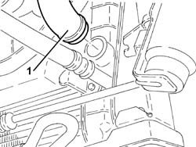
Applies to: engines: 1.9 JTD 8v ; all production periods
1. Remove the lower coolant outlet hose from the radiator.
Lower the vehicle.
2. Disconnect the system supply pipe from the water pump rigid inlet pipe.
3. Disconnect the intermediate coupling for the engine coolant reservoir return pipe.
1048A50 air inlet pipe to turbo charger - r + r
4. Disconnect the upper coolant inlet hose to the radiator from the thermostat.
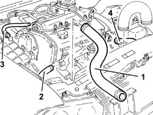
Applies to: engines: 1.9 JTD 8v ; all production periods
1. Disconnect the electrical connection from the air flow meter.
| Name | Connector |
|---|---|---|
1 | Air flow meter |
2. Undo the bolt (2a) and remove the air filter (2b) and air flow meter (2c) assembly.
3. Disconnect the air supply hose from the heat exchanger to the inlet manifold side inlet manifold.
4. Disconnect the brake servo vacuum pipe from the vacuum pump.
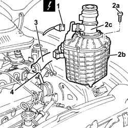
Applies to: engines: 1.9 JTD 8v ; all production periods
1. Disconnect the fuel inlet pipe from the pressure pump.
2. Disconnect the fuel return pipe to the reservoir from the fuel return manifold pipe.
3. Disconnect the fuel return pipe from the filter to the fuel filter side fuel return manifold pipe.
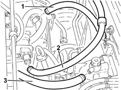
Applies to: engines: 1.9 JTD 8v ; all production periods
1. Undo the bolts (1a) and remove the power unit reaction rod (1b).
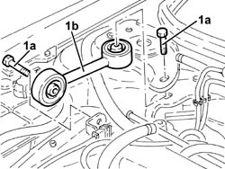
Applies to: engines: 1.9 JTD 8v ; all production periods
1. Undo the nuts (1a) and move the oil vapour separator (1b) aside complete with pipes.
Disconnect the engine oil vapour pipe from the intake side separator.
Disconnect the crankcase side engine oil recovery pipe.
2. Disconnect the engine compartment wiring main electrical connections.
3. Disconnect the electrical connection from the combined sender unit for the engine coolant temperature gauge and warning light.
| Name | Connector |
|---|---|---|
3 | Coolant temperature sender unit |
4. Disconnect the electrical connection from the engine coolant temperature sensor.
| Name | Connector |
|---|---|---|
4 | Engine temperature sensor |
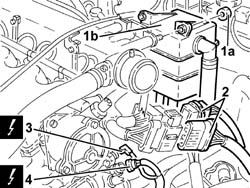
Applies to: engines: 1.9 JTD 8v ; all production periods
1. Disconnect the electrical connections from the injectors.
| Name | Connector |
|---|---|---|
1 | Injector |
Applies to: engines: 1.9 JTD 8v ; all production periods
1. Disconnect the electrical connection from the E.G.R. valve.
| Name | Connector |
|---|---|---|
1 | EGR solenoid |
2. Disconnect the electrical connections from the pre-heating control unit.
| Name | Connector |
|---|---|---|
2 | Plug preheating control unit |
3. Disconnect the electrical connection from the fuel pressure sensor.
| Name | Connector |
|---|---|---|
3 | Fuel pressure sensor |
4. Disconnect the electrical connection from the excess pressure sensor.
| Name | Connector |
|---|---|---|
4 | Turbocharging sensor |
5. Disconnect the electrical connection from the thermal switch for the fuel heater.
| Name | Connector |
|---|---|---|
5 | Diesel heater resistance |
6. Disconnect the electrical connection from the fuel heater.
| Name | Connector |
|---|---|---|
6 | Diesel heater resistance |
7. Disconnect the E.G.R. system vacuum pipe coupling.
Applies to: engines: 1.9 JTD 8v ; all production periods
1. Disconnect the electrical connection from the fuel temperature sensor.
| Name | Connector |
|---|---|---|
1 | Fuel temperature sensor |
2. Disconnect the electrical connection from the pressure regulator.
| Name | Connector |
|---|---|---|
2 | Fuel pressure regulator |
3. Disconnect the electrical connection for the timing sensor.
| Name | Connector |
|---|---|---|
3 | Timing sensor |
Applies to: engines: 1.9 JTD 8v ; all production periods
1. Disconnect the electrical connection for the air conditioning compressor electro-magnet coupling.
| Name | Connector |
|---|---|---|
1 | Air conditioning compressor "on" electromagnet |
Move the engine compartment right side wiring aside.
Applies to: engines: 1.9 JTD 8v ; all production periods
1. Disconnect the electrical connection from the reversing lights switch.
| Name | Connector |
|---|---|---|
1 | Reversing lights switch |
2. Disconnect the starter motor and alternator electrical connection.
Applies to: engines: 1.9 JTD 8v ; all production periods
1. Disconnect the water supply pipe to the heater from the thermostat.
2. Disconnect the water return pipe from the heater from the water pump rigid inlet pipe.
Applies to: engines: 1.9 JTD 8v ; all production periods
1. Disconnect the gear selector and engagement cables.
2. Undo the nuts (2a) and move the bracket (2b), complete with cables, aside.
Applies to: engines: 1.9 JTD 8v ; all production periods
1. Remove the circlip (1a) and remove the operating cylinder (1b) from the support and move it sideways without disconnecting the pipe.
Applies to: engines: 1.9 JTD 8v ; all production periods
1. Disconnect the supply pipe from the power assisted steering fluid reservoir to the pump, pump side.
2. Disconnect the supply pipe from the power assisted steering fluid pump to the box, pump side.
Applies to: engines: 1.9 JTD 8v ; all production periods
1. Disconnect the electrical connections from the radiator cooling fans.
| Name | Connector |
|---|---|---|
1 | Engine fan motor - 1 |
| Name | Connector |
|---|---|---|
- | Engine fan motor - 2 |
2. Disconnect the electrical connections from the engine cooling fan resistor.
| Name | Connector |
|---|---|---|
2 | Engine fan adjustment resistor - 1 |
| Name | Connector |
|---|---|---|
- | Engine fan adjustment resistor - 2 |
Applies to: engines: 1.9 JTD 8v ; all production periods
1. Undo the bolt (1a) and disconnect the coolant supply pipe (1b) from the air conditioning compressor.
Applies to: engines: 1.9 JTD 8v ; all production periods
1. Undo the nuts (1a) and disconnect the intermediate coupling for the air conditioning system pipes (1b).
Applies to: engines: 1.9 JTD 8v ; all production periods
1. Undo the bolt (1a) and disconnect the coolant supply pipe (1b) from the air conditioning compressor.
2. Remove the coolant supply pipe to the air conditioning compressor.
Applies to: engines: 1.9 JTD 8v ; all production periods
1. Disconnect the electrical connection from the four stage pressure switch.
| Name | Connector |
|---|---|---|
- | 4 stage pressure switch |
2. Undo the bolt (2a) and disconnect the coolant supply pipe (2b) from the condenser.
3. Undo the bolts fixing the drier filter mounting bracket to the bodyshell.
Applies to: engines: 1.9 JTD 8v ; all production periods
1. Remove the drier filter (1a) complete with bracket (1b) and pipes (1c).
Applies to: engines: 1.9 JTD 8v ; all production periods
Raise the car.
1. Release the power assisted steering fluid coil from the bands.
Applies to: engines: 1.9 JTD 8v ; all production periods
1. Position a hydraulic jack under the radiator lower crossmember.
2. Undo the bolts (2a) and remove the radiator lower crossmember (2b) complete with radiator (2c) and fans (2d).
Applies to: engines: 1.9 JTD 8v ; all production periods
1. Remove the air supply hose between the turbocharger and the heat exchanger.
2. Undo the nut (2a) and disconnect the battery earth lead (2b) from the gearbox.
Applies to: engines: 1.9 JTD 8v ; all production periods
1. Disconnect the front brake caliper flexible pipes (1a) and the electrical cables for the front wheel rpm sensors (1b) from the brackets.
2. Undo the bolts fixing the left and right driveshafts.
3. Undo the nut (3a) and disconnect the front steering knuckles (3b) from the upper track control arms (3c) using the tool (3d).
| Name | Country |
|---|---|---|
3d | Extractor | 1.821.169.000 |
Move the right and left driveshafts away from the intermediate shaft and the differential, respectively.
Applies to: engines: 1.9 JTD 8v ; all production periods
1076B50 exhaust pipe attachment to engine - r + r
1. Position the tools for removing the power unit (1b), (1c) and (1d) on a hydraulic jack (1a) as illustrated in the diagram.
| Name | Country |
|---|---|---|
1b | Crossmember | 1.820.225.000 |
| Name | Country |
|---|---|---|
1c | Supports | 1.820.623.000 |
| Name | Country |
|---|---|---|
1d | Adaptor | 1.870.682.000 |
Applies to: engines: 1.9 JTD 8v ; all production periods
1. Fix the tool assembled in this way to the power unit as illustrated in the diagram.
Applies to: engines: 1.9 JTD 8v ; all production periods
1. Undo the bolts (1a) and remove the gearbox side power unit rigid rear support (1b).
Applies to: engines: 1.9 JTD 8v ; all production periods
1. Undo the bolts (1a) and remove the power unit rigid rear support (1b).
Applies to: engines: 1.9 JTD 8v ; all production periods
1. Undo the bolt securing the timing side power unit rigid support to the flexible mounting.
2. Lower the hydraulic jack and remove the power unit from the engine compartment.
Applies to: engines: 1.9 JTD 8v ; all production periods
Secure and support the power unit using a hydraulic hoist, then release it from the tools used for the removal.
Applies to: engines: 1.9 JTD 8v ; all production periods
Refitting
RemovingUsing a hydraulic hoist, position and fix the power unit to the tools to be used for refitting.
1. Position the power unit in the engine compartment using the hydraulic jack.
2. Tighten the bolt fixing the power unit rigid support to the mounting to the recommended torque.
| Fastening | Component | Ø | Value (daNm) |
|---|---|---|---|---|
2 | Bolt | ENGINE MOUNT TIMING SIDE | M12 | (Flexible mounting side) 4.2 ÷ 5.1 |
Applies to: engines: 1.9 JTD 8v ; all production periods
1. Fit the rigid rear support for the power unit (1a) and fix it tightening the bolts (1b) and (1c) to the recommended torque.
| Fastening | Component | Ø | Value (daNm) |
|---|---|---|---|---|
1b | Bolt | POWER UNIT RIGID REAR MOUNT | M12 | 7.5 ÷ 9.2 |
| Fastening | Component | Ø | Value (daNm) |
|---|---|---|---|---|
1b | Bolt | POWER UNIT RIGID REAR MOUNT | M16 | 10.2 - 12.6 |
| Fastening | Component | Ø | Value (daNm) |
|---|---|---|---|---|
1c | Bolt | INTERM RUBBER MOUNT | M8 | 2.7 - 3.4 |
Applies to: engines: 1.9 JTD 8v ; all production periods
1. Fit the gearbox side power unit rigid support (1a) and and fix it tightening the bolts to the recommended torque.
| Fastening | Component | Ø | Value (daNm) |
|---|---|---|---|---|
1b | Bolt | POWER UNIT GEAR BOX END RIGID MOUNT | M10 | 4.2 - 5.1 |
Applies to: engines: 1.9 JTD 8v ; all production periods
Undo the fixings and separate the tools used for refitting the power unit, then place it back in position after having separated it from the hydraulic jack.
Place the left and right driveshafts back in their housings.
Tighten the nuts fixing the front steering knuckles to the upper track control arms to the recommended torque.
| Fastening | Component | Ø | Value (daNm) |
|---|---|---|---|---|
- | Nut | FRONT SUSPENSION TOP LEVER | M10 | (Front steering knuckle side) 4.3 ÷ 4.7 |
For the old solution, tighten the new bolts fixing the right driveshaft to the recommended torque.
| Fastening | Component | Ø | Value (daNm) |
|---|---|---|---|---|
- | Bolt | FRONT DRIVE SHAFT COMPLETE WITH JOINTS | M8 | (Int. diff./ intermediate. driveshaft. side.) 3.6 ÷ 4.4 |
For the new solution, tighten the new bolts fixing the right driveshaft to the recommended torque.
| Fastening | Component | Ø | Value (daNm) |
|---|---|---|---|---|
- | Bolt | FRONT DRIVE SHAFT COMPLETE WITH JOINTS | M10 | (Diff. internal./ intermediate. shaft. driveshaft.) side 5.0 ÷ 6.1 |
For the old solution, tighten the new bolts fixing the left driveshaft to the recommended torque.
| Fastening | Component | Ø | Value (daNm) |
|---|---|---|---|---|
- | Bolt | FRONT DRIVE SHAFT COMPLETE WITH JOINTS | M8 | (Int. diff./ intermediate. driveshaft. side.) 3.6 ÷ 4.4 |
Connect the battery earth lead to the gearbox and fix it using the nut.
Fit the air supply hose between the turbocharger and the heat exchanger.
Place the radiator lower crossmember, complete with radiator and fans, back in its housing using a hydraulic jack.
Tighten the bolts securing the radiator lower crossmember to the bodyshell.
Fix the power assisted steering fluid coil to the bands.
Lower the vehicle.
Place the drier filter, complete with bracket and pipes, back in its housing.
1. Tighten the bolts fixing the drier filter mounting bracket to the bodyshell.
2. Conect the coolant supply pipe (2a) to the condenser and fix it tightening the bolt (2b) to the recommended torque.
| Fastening | Component | Ø | Value (daNm) |
|---|---|---|---|---|
2b | Bolt | CLIMATE CONTROL HYDRAULIC CIRCUIT CONNECTOR. | M6 | 0.9 - 1.2 |
3. Connect the electrical connection to the four stage pressure switch.
Applies to: engines: 1.9 JTD 8v ; all production periods
1. Place the coolant supply pipe to the air conditioning compressor back in its housing.
2. Connect the coolant supply pipe (2a) to the air conditioning compressor and fix it tightening the bolt (2b) to the recommended torque.
| Fastening | Component | Ø | Value (daNm) |
|---|---|---|---|---|
2b | Bolt | CLIMATE CONTROL HYDRAULIC CIRCUIT CONNECTOR. | M6 | 0.9 - 1.2 |
Applies to: engines: 1.9 JTD 8v ; all production periods
1. Connect the intermediate coupling for the air conditioning system pipes (1a) and tighten the nuts (1b) to the recommended torque.
| Fastening | Component | Ø | Value (daNm) |
|---|---|---|---|---|
1b | Nut | CLIMATE CONTROL HYDRAULIC CIRCUIT CONNECTOR. | M6 | 0.9 - 1.2 |
Applies to: engines: 1.9 JTD 8v ; all production periods
1. Connect the coolant supply pipe (1a) to the air conditioning compressor and tighten the nuts (1b) to the recommended torque.
| Fastening | Component | Ø | Value (daNm) |
|---|---|---|---|---|
1b | Bolt | CLIMATE CONTROL HYDRAULIC CIRCUIT CONNECTOR. | M6 | 0.9 - 1.2 |
Applies to: engines: 1.9 JTD 8v ; all production periods
Connect the electrical connections to the resistor for the engine cooling fan.
Connect the electrical connections to the radiator cooling fans.
1. Connect the supply pipe from the power assisted steering pump to the box, pump side and tighten the connector to the recommended torque.
| Fastening | Component | Ø | Value (daNm) |
|---|---|---|---|---|
1 | Connector | PIPE BTWN PUMP + POWER STEERING BOX | M16 | 3.8 - 4.2 |
2. Connect the supply pipe from the fluid reservoir to the power assisted steering pump, pump side.
Applies to: engines: 1.9 JTD 8v ; all production periods
Place the operating cylinder back in its housing and secure it using a circlip.
Place the bracket, complete with gear selector and engagement cables, back in its housing and fix it using the bolts.
Connect the gear selector and engagement cables.
Connect the water return pipe from the heater to the rigid inlet pipe to the water pump.
Connect the water supply pipe to the heater to the thermostat.
Disconnect the starter motor and alternator electrical connection.
Connect the electrical connection to the reversing lights switch.
Place the right side wiring in position in the engine compartment.
Connect the electrical connection for the air conditioning compressor electro-magnet coupling.
Connect the timing sensor electrical connection.
Conect the electrical connection to the pressure regulator.
Connect the electrical connection to the fuel temperature sensor.
Connect the E.G.R. system vacuum pipe coupling.
Connect the electrical connection to the fuel heater.
Connect the electrical connection to the thermal switch for the fuel heater.
Connect the electrical connection to the excess pressure sensor.
Connect the electrical connection to the fuel pressure senor.
Connect the electrical connections for the fuel pre-heating control unit.
Connect the electrical connection to the E.G.R. valve.
Connect the electrical connections to the injectors.
Connect the electrical connection to the engine coolant temperature sensor.
Connect the electrical connection to the combined sender unit for the coolant temperature gauge and overheating warning light.
Connect the main electrical connections for the engine compartment wiring.
Connect the engine oil recovery pipe, crankcase side.
Conect the oil vapour pipe from the intake to the separator, intake side.
Place the oil vapour separator, complete with pipes, back in its housing and fix it using the nuts.
1. Fit the power unit (1a) reaction rod and fix it tightening the bolts (1b) to the recommended torque.
| Fastening | Component | Ø | Value (daNm) |
|---|---|---|---|---|
1b | Bolt | REACTION ROD | M10 | 4.2 ÷ 5.1 |
Applies to: engines: 1.9 JTD 8v ; all production periods
Connect the fuel return pipe from the filter to the fuel return manifold pipe, fuel filter side.
Connect the fuel return pipe to the tank to the fuel return manifold pipe.
Connect the fuel inlet pipe to the pressure pump.
Connect the brake servo vacuum intake pipe to the vacuum unit.
Conect the air supply hose from the heat exchanger to the inlet manifold, inlet manifold side.
Fit the air filter, complete with air flow meter and fix it using the bolt.
Connect the electrical connection to the air flow meter.
Connect the upper radiator coolant inlet hose from the thermostat.
1048A50 air inlet pipe to turbo charger - r + r
Connect the intermediate coupling for the return pipe to the engine coolant reservoir.
Connect the system supply pipe to the water pump rigid inlet pipe.
Fit the lower coolant outlet hose from the radiator.
Supply the engine cooling system with the recommended fluid.
| Type | Component | Name | Qty. |
|---|---|---|---|---|
- | Fluid | ENGINE COOLING CIRCUIT | Mixture 50% Paraflu11 for Alfa Romeo/distilled water | 6.1 |
5040A10 Air conditioning refrigerant CIRCUIT - Draining and Refilling
7055A43 central front grille - r r
7055B42 Additional FRONT WHEEL ARCH (one), left or right - R.R.
4450B12 front or rear wheels (two) - r+r
5530B52 Battery DRIP TRAY/SUPPORT - R.R.
Fill the power steering circuit with the recommended fluid.
| Type | Component | Name | Qty. |
|---|---|---|---|---|
- | Fluid | POWER ASSISTED STEERING CIRCUIT | TUTELA GI/A | - |
Bleed the power steering system as described below
With the front wheels raised off the ground, with the engine switched off turn the steering wheel to full lock, left and right, 4-5 times.
Check and, if necessary, top up the fluid level in the reservoir.
Position the vehicle on the ground and start up the engine.
Carry out 4 - 5 complete steering wheel rotation cycles (right and left).
Top up the fluid level in the reservoir.
Applies to: engines: 2.4 JTD 10v; all production periods
Removing
RefittingPosition the vehicle on the ramp.
5530B52 Battery DRIP TRAY/SUPPORT - R.R.
4450B10 Front WHEEL (one) - R.R.
7055B42 Additional FRONT WHEEL ARCH (one), left or right - R.R.
7055A43 central front grille - r r
5040A10 Air conditioning refrigerant CIRCUIT - Draining and Refilling
Drain the power steering fluid from the reservoir using a suitable syringe.
Raise the car.
1. Disconnect the lower coolant outlet hose from the radiator and drain the engine coolant.
2. Disconnect the lower radiator coolant outlet hose from the pump rigid coolant inlet pipe and remove it.
3. Disconnect the system supply pipe from the water pump rigid inlet pipe.
Applies to: engines: 2.4 JTD 10v; all production periods
1048A50 air inlet pipe to turbo charger - r + r
1. Disconnect the coolant outlet hose from the thermostat.
Applies to: engines: 2.4 JTD 10v; all production periods
1. Disconnect the electrical connection from the air flow meter.
| Name | Connector |
|---|---|---|
1 | Air flow meter |
2. Remove the air filter complete with air flow meter.
Applies to: engines: 2.4 JTD 10v; all production periods
1. Disconnect and remove the air supply hose from the heat exchanger to the inlet manifold.
2. Disconnect the brake servo vacuum intake pipe from the vacuum pump.
Applies to: engines: 2.4 JTD 10v; all production periods
1. Disconnect the fuel supply pipe from the filter.
2. Disconnect the fuel return pipe to the tank from the fuel return manifold pipe.
3. Disconnect the electrical connection from the supercharging sensor.
| Name | Connector |
|---|---|---|
3 | Turbocharging sensor |
4. Disconnect the electrical connection from the pressure regulator on the pressure pump.
| Name | Connector |
|---|---|---|
4 | Fuel pressure regulator |
5. Disconnect the electrical connection from the fuel pressure sensor.
| Name | Connector |
|---|---|---|
5 | Fuel pressure sensor |
6. Disconnect the electrical connection from the fuel temperature sensor.
| Name | Connector |
|---|---|---|
6 | Fuel temperature sensor |
Applies to: engines: 2.4 JTD 10v; all production periods
1. Undo nuts (1a) and move fuel filter assembly (1b) away from the intake manifold.
2. Undo nuts (2a) and move oil vapour separator (2b) away from the intake manifold.
3. Undo the bolts (3a) and move the coolant rigid return pipe (3b) to the engine cooling system reservoir away.
4. Disconnect the electrical connections from the heater plugs.
| Name | Connector |
|---|---|---|
4 | Heater plug |
5. Disconnect the electrical connections from the injectors, then move the wiring to the side.
| Name | Connector |
|---|---|---|
5 | Injector |
Applies to: engines: 2.4 JTD 10v; all production periods
Place the oil vapour separator back in its housing and fix it to the inlet manifold using the nuts.
Place the fuel filter back in its housing and fix it to the inlet manifold using the nuts.
1. Disconnect the vacuum intake pipe from the EGR valve.
2. Disconnect the vacuum intake pipe from the E.G.R. solenoid valve and remove it.
3. Disconnect the timing sensor electrical connection.
| Name | Connector |
|---|---|---|
3 | Timing sensor |
4. Disconnect the electrical connection from the E.G.R. valve.
| Name | Connector |
|---|---|---|
4 | EGR solenoid |
5. Disconnect the electrical connections from the pre-heating control unit.
| Name | Connector |
|---|---|---|
5 | Plug preheating control unit |
Applies to: engines: 2.4 JTD 10v; all production periods
1. Disconnect the starter motor electrical connection.
| Name | Connector |
|---|---|---|
1 | Starter' motor |
2. Disconnect the electrical connection from the reversing lights switch.
| Name | Connector |
|---|---|---|
2 | Reversing lights switch |
3. Disconnect the electrical connection from the engine temperature sensor.
| Name | Connector |
|---|---|---|
3 | Engine temperature sensor |
4. Disconnect the electrical connection from the combined sender unit for the engine coolant temperature gauge and warning light.
| Name | Connector |
|---|---|---|
4 | Coolant temperature sender unit |
5. Disconnect the coolant supply pipe to the climate control system heater from the thermostat.
6. Disconnect the return pipe from the climate control system heater from the water pump rigid inlet pipe.
Applies to: engines: 2.4 JTD 10v; all production periods
1. Undo the bolt (1a), remove the circlip (1b), then remove the operating cylinder (1c), complete with pipe, and move it sideways.
Applies to: engines: 2.4 JTD 10v; all production periods
1. Disconnect the gear engagement/selector cables.
2. Undo the bolts (2a) and move the mounting bracket (2b), complete with gear selector/engagement cables.
Applies to: engines: 2.4 JTD 10v; all production periods
1. Undo the bolts (1a) and remove the power unit reaction rod (1b).
2. Disconnect the electrical connection for the rpm sensor.
| Name | Connector |
|---|---|---|
2 | Rpm sensor |
3. Disconnect the coolant supply pipe to the engine coolant reservoir from the rigid pipe.
4. Disconnect the fluid supply pipe from the power assisted steering pump.
5. Disconnect the fluid supply pipe from the power assisted steering pump.
Applies to: engines: 2.4 JTD 10v; all production periods
1. Undo the bolts fixing the right driveshaft.
2. Release the A.B.S. sensor cable and the brake fluid pipe for the right front brake caliper from the bands.
3. Undo the nut (3a) and disconnect the steering knuckle (3b) from the upper track control arm using the tool (3c).
| Name | Country |
|---|---|---|
3c | Extractor | 1.821.169.000 |
Move the right driveshaft away from the intermediate shaft.
Applies to: engines: 2.4 JTD 10v; all production periods
Move the left driveshaft away from the differential, following the instructions for the right one.
1. Disconnect the electrical connections from the air conditioning compressor.
2. Undo the bolts (2a) and disconnect the coolant inlet and outlet pipes (2b) from the air conditioning compressor.
Applies to: engines: 2.4 JTD 10v; all production periods
1076B50 exhaust pipe attachment to engine - r + r
1. Disconnect and remove the air supply hose between the turbocharger and the air/air heat exchanger.
2. Release the air conditioning system pipes from the fixings on the radiator lower crossmember.
3. Undo the bolts and disconnect the intermediate couplings for the air conditioning system pipes.
Applies to: engines: 2.4 JTD 10v; all production periods
1. Undo the bolts (1a) and disconnect the coolant inlet and outlet pipes (1b) from the air conditioning system condenser.
2. Disconnect the electrical connection from the four stage pressure switch.
| Name | Connector |
|---|---|---|
2 | 4 stage pressure switch |
Applies to: engines: 2.4 JTD 10v; all production periods
1. Remove the coolant inlet and outlet pipes for the air conditioning system compressor.
2. Undo the fixings and remove the drier filter, complete with mounting bracket and pipes.
Applies to: engines: 2.4 JTD 10v; all production periods
Disconnect the electrical connections from the cooling fans.
1. Disconnect the power assisted steering system fluid cooling pipe from the bands on the radiator lower crossmember.
Applies to: engines: 2.4 JTD 10v; all production periods
1. Position a hydraulic jack under the radiator lower crossmember.
2. Undo the bolts (2a) and remove the radiator lower crossmember (2b), complete with radiator, condenser and cooling fans.
Applies to: engines: 2.4 JTD 10v; all production periods
1. Undo the bolts (1a) and remove the air duct (1b) for the supercharging air/air heat exchanger.
2. Undo the bolts (2a) and remove the supercharging air/air heat exchanger (2b).
3. Remove the air filter cold air intake.
Applies to: engines: 2.4 JTD 10v; all production periods
1. Undo the nut (1a) and disconnect the earth lead (1b) from the gearbox.
2. Position a hydraulic jack under the gearbox.
3. Undo the bolts (3a) and remove the gearbox side power unit rigid support (3b).
4. Fit the tool.
| Name | Country |
|---|---|---|
4 | Mount | 1.870.644.001 |
Remove the hydraulic jack positioned under the gearbox.
Applies to: engines: 2.4 JTD 10v; all production periods
1. Position tools 1a, 1b, 1c for removing the power unit on the hydraulic jack.
| Name | Country |
|---|---|---|
1a | Crossmember | 1.820.225.000 |
| Name | Country |
|---|---|---|
1b | Adaptors | 1.860.910.002 |
| Name | Country |
|---|---|---|
1c | Mount | 1.870.644.000 |
Applies to: engines: 2.4 JTD 10v; all production periods
1. Position the tool for removing the power unit, assembled in this way, under the power unit and fix it to the tool fitted previously.
2. Undo the bolts (2a) and remove the power unit intermediate support (2b).
3. Recover the rigid support for the exhaust pipe.
4. Undo the bolt fixing the timing side rigid power unit support to the flexible mounting.
Applies to: engines: 2.4 JTD 10v; all production periods
Lower the hydraulic jack and remove the power unit from the engine compartment.
1. Secure and support the power unit (1a) using a hydraulic hoist, then releaseit from the tools (1b) used for the removal.
Applies to: engines: 2.4 JTD 10v; all production periods
Refitting
RemovingUsing a hydraulic hoist, position and fix the power unit to the tools to be used for refitting.
1. Place the power unit back in the engine compartment using the hydraulic jack.
2. Tighten the bolt securing the timing side power unit rigid support to the flexible mounting.
| Fastening | Component | Ø | Value (daNm) |
|---|---|---|---|---|
2 | Bolt | ENGINE MOUNT TIMING SIDE | M12 | 7.5 - 9.2 |
3. Fit the power unit intermediate support (3a), complete with rigid support for the exhaust pipe (3b), and fix it tightening the bolts (3c) and (3d) to the recommended torque.
| Fastening | Component | Ø | Value (daNm) |
|---|---|---|---|---|
3c | Bolt | GEARBOX SIDE RUBBER MOUNT | M8 | 2.7 - 3.4 |
| Fastening | Component | Ø | Value (daNm) |
|---|---|---|---|---|
3d | Bolt | POWER UNIT RIGID REAR MOUNT | M12 | 7.5 - 9.2 |
| Fastening | Component | Ø | Value (daNm) |
|---|---|---|---|---|
3d | Bolt | POWER UNIT RIGID REAR MOUNT | M16 | 10.2 - 12.6 |
Applies to: engines: 2.4 JTD 10v; all production periods
Remove the tools used for the refitting from the power unit and return them to their place.
1. Position a hydraulic jack under the gearbox.
2. Fit the gearbox side power unit rigid support (2a) and fix it tightening the bolts to the recommended torque.
| Fastening | Component | Ø | Value (daNm) |
|---|---|---|---|---|
2b | Bolt | POWER UNIT GEAR BOX END RIGID MOUNT | M10 | 4.2 ÷ 5.1 |
Remove the hydraulic jack positioned under the gearbox.
Connect the earth lead to the gearbox and fix it using the nut.
Applies to: engines: 2.4 JTD 10v; all production periods
Fit the air filter cold air intake.
Fit the supercharging air/air heat exchanger and fix it using the bolts.
Fit the supercharging air/air heat exchanger air duct and fix it using the bolts.
Using a hydraulic jack, fit the radiator lower crossmember, complete with radiator, condenser and cooling fans and fix it using the bolts.
Connect the power assisted steering system fluid cooling pipe to the radiator lower crossmember bands.
Connect the electrical connections to the cooling fans.
Fit the drier filter, complete with mounting bracket and pipes, and fix it using the bolts.
Fit the coolant inlet and outlet pipes from the air conditioning system compressor.
Connect the electrical connection to the four stage pressure switch.
Connect the coolant fluid inlet and outlet pipes to the air conditioning system condenser and fix them using the bolts.
Connect the intermediate couplings for the air conditioning system pipes and fix them using the bolts.
Fix the air conditioning system pipes to the bands on the radiator lower crossmember.
Fit the air supply hose between the turbocharger and the air/air heat exchanger.
1076B50 exhaust pipe attachment to engine - r + r
Connect the coolant inlet and outlet pipes to the air conditioning compressor and fix them using the bolt.
Connect the electrical connection for the air conditioning compressor.
Move the right driveshaft closer to the differential.
Connect the steering knuckle to the upper track control arm and fix it tightening the nut to the recommended torque.
| Fastening | Component | Ø | Value (daNm) |
|---|---|---|---|---|
- | Nut | FRONT SUSPENSION TOP LEVER | M10 | (Wheel damper side) 4.3 - 4.7 |
Fix the A.B.S. sensor cable and the brake fluid pipe for the right front brake caliper to the bands.
Tighten the new bolts fixing the right driveshaft to the recommended torque.
| Fastening | Component | Ø | Value (daNm) |
|---|---|---|---|---|
- | Bolt | FRONT DRIVE SHAFT COMPLETE WITH JOINTS | M8 | (Intermediate driveshaft side) 3.6 ÷ 4.4 |
Connect the left driveshaft to the differential, following the instructions for the right one.
Connect the fluid supply pipe to the power assisted steering pump and tighten it to the recommended torque.
| Fastening | Component | Ø | Value (daNm) |
|---|---|---|---|---|
- | Connector | PIPE BTWN PUMP + POWER STEERING BOX | M18 | 3.8 - 4.2 |
Connect the fluid supply pipe to the power assisted steering pump.
Connect the coolant supply pipe to the engine coolant reservoir to the rigid pipe.
Connect the electrical connection for the rpm and timing sensor.
Fit the reaction rod for the power unit and fix it tightening the bolts to the recommended torque.
| Fastening | Component | Ø | Value (daNm) |
|---|---|---|---|---|
- | Bolt | REACTION ROD | M10 | 4.2 ÷ 5.1 |
Fit the mounting bracket complete with gear selector/engagement cables and fix it using the bolts.
Connect the gear engagement/selector cables.
Place the operating cylinder, complete with pipe, back in its housing and fix it using the circlip and the bolt.
Connect the return pipe from the climate control system heater to the water pump rigid inlet pipe.
Connect the coolant supply pipe to the climate control system heater to the thermostat.
Connect the electrical connection to the combined sender unit for the coolant temperature gauge and overheating warning light.
Connect the electrical connection to the engine temperature senor.
Connect the electrical connection for the reversing lights switch.
Connect the electrical connection for the starter motor.
Connect the electrical connections to the pre-heating control unit.
Connect the electrical connection to the EGR solenoid.
Connect the timing sensor electrical connection.
Fit the vacuum intake pipe and connect it to the E.G.R. solenoid valve and the E.G.R. valve.
Undo the nuts and move the fuel filter away from the inlet manifold.
Undo the nuts and move the oil vapour separator away from the inlet manifold.
Position the electrical wiring and connect the electrical connections to the injectors.
Connect the electrical connections to the heater plugs.
Place the coolant rigid return pipe to the engine cooling system reservoir back in its housing and fix it using the bolts.
Place the oil vapour separator back in its housing and fix it to the inlet manifold using the nuts.
Place the fuel filter back in its housing and fix it to the inlet manifold using the nuts.
Connect the electrical connection to the fuel temperature sensor.
Connect the electrical connection to the fuel pressure sensor.
Connect the electrical connection to the pressure regulator to the pressure pump.
Connect the electrical connection to the supercharging sensor.
Connect the fuel return pipe to the tank to the fuel return pipe.
Connect the fuel supply pipe to the filter.
Connect the brake servo vacuum intake pipe to the vacuum pump.
Fit the air supply hose from the heat exchanger to the inlet manifold.
Fit the air filter complete with air flow meter.
Connect the electrical connection to the air flow meter.
Connect the coolant outlet hose to the thermostat.
1048A50 air inlet pipe to turbo charger - r + r
Connect the system supply pipe to the water pump rigid inlet pipe.
Fit the coolant lower outlet hose from the radiator to the water pump rigid inlet pipe.
Supply the engine cooling system with the recommended fluid.
| Type | Component | Name | Qty. |
|---|---|---|---|---|
- | Fluid [l] | ENGINE COOLING CIRCUIT | Mixture 50% Paraflu11 for Alfa Romeo/distilled water | 6.8 |
5040A10 Air conditioning refrigerant CIRCUIT - Draining and Refilling
7055A43 central front grille - r r
7055B42 Additional FRONT WHEEL ARCH (one), left or right - R.R.
4450B10 Front WHEEL (one) - R.R.
5530B52 Battery DRIP TRAY/SUPPORT - R.R.
Fill the power steering circuit with the recommended fluid.
| Type | Component | Name | Qty. |
|---|---|---|---|---|
- | Fluid | POWER ASSISTED STEERING CIRCUIT | TUTELA GI/A | - |
Bleed the power steering system as described below
With the front wheels raised off the ground, with the engine switched off turn the steering wheel to full lock, left and right, 4-5 times.
Check and, if necessary, top up the fluid level in the reservoir.
Position the vehicle on the ground and start up the engine.
Carry out 4 - 5 complete steering wheel rotation cycles (right and left).
Top up the fluid level in the reservoir.
Topics linked from this page (60)
- 1008A42 gear box left rigid mount - r r
- 1008A44 rear rigid mount - r r
- 1008A46 cam shaft left rigid mount - r r
- 1008C10 power unit upper reaction link r r
- 1016A40 ignition coil cover on cylinder head- r+r
- 1048A10 air cleaner filtering element - replace
- 1048A28 vacuum air circuit resonator pipe - r+r
- 1048A34 sleeve(s) from flow meter to air supply capacity case - r + r
- 1048A50 air inlet pipe to turbo charger - r + r
- 1068A30 accelerator control cable - r + r
- 1076B50 exhaust pipe attachment to engine - r + r
- 1076B52 exhaust pipe (one) leaving l/h or r/h exhaust manifold - r + r
- 1088B24 engine cooling radiator - r r for air conditioned versions
- 1088D10 lower sleeve for coolant outlet from radiator - r + r
- 1088D14 upper sleeve for coolant inlet to radiator - r + r
- 1088E10 radiator cooling fan - r + r
- 1820B08 Clutch release HYDRAULIC SYSTEM - Bleeding air and restoring level
- 2110C50 gear selection and engagement unit - r r
- 4450B10 Front WHEEL (one) - R.R.
- 4450B12 front or rear wheels (two) - r+r
- 5040A10 Air conditioning refrigerant CIRCUIT - Draining and Refilling
- 5530B10 battery - r+r
- 5530B52 Battery DRIP TRAY/SUPPORT - R.R.
- 7055A43 central front grille - r r
- 7055B10 Front BUMPER - R.R.
- 7055B42 Additional FRONT WHEEL ARCH (one), left or right - R.R.
- 7055B54 under-engine guard - r r
- 7055B64 Engine compartment DUST shield in front wheel arch (one), left or right - R.R.
- A1 Battery
- A20 Starter' motor
- A40 Heater plug
- C1 Battery earth ( BATTERY NEGATIVE )
- D4 Front/engine connection
- D4A Front/engine connection ( ENGINE )
- D4B Front/engine connection ( ENGINE )
- I20 Reversing lights switch
- K10 4 stage pressure switch
- K35 Coolant temperature sender unit
- K40 Lambda sensor
- K41 Air flow meter ( ENGINE )
- K42 Air temperature sensor
- K45 Engine temperature sensor
- K46 Rpm sensor
- K47 Timing sensor
- K50 Detonation sensor - 1
- K81 Fuel temperature sensor
- K82 Turbocharging sensor
- K83 Fuel pressure sensor
- L10 Fuel vapour recovery solenoid
- L20 Air conditioning compressor "on" electromagnet
- L30 EGR solenoid
- M10 Engine management ECU
- M15 Plug preheating control unit
- N11 Engine fan motor - 1
- N12 Engine fan motor - 2
- N70 Injector
- N77 Fuel pressure regulator
- O10 Engine fan adjustment resistor - 1
- O12 Engine fan adjustment resistor - 2
- O20 Diesel heater resistance